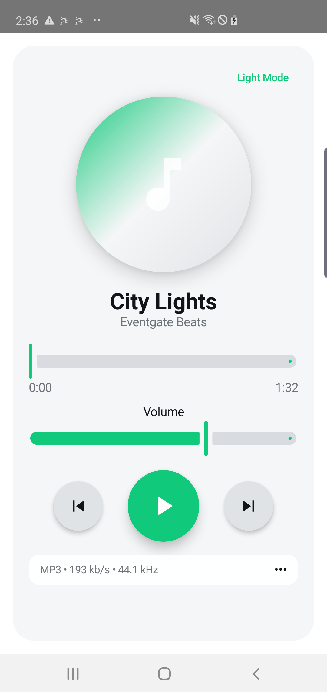
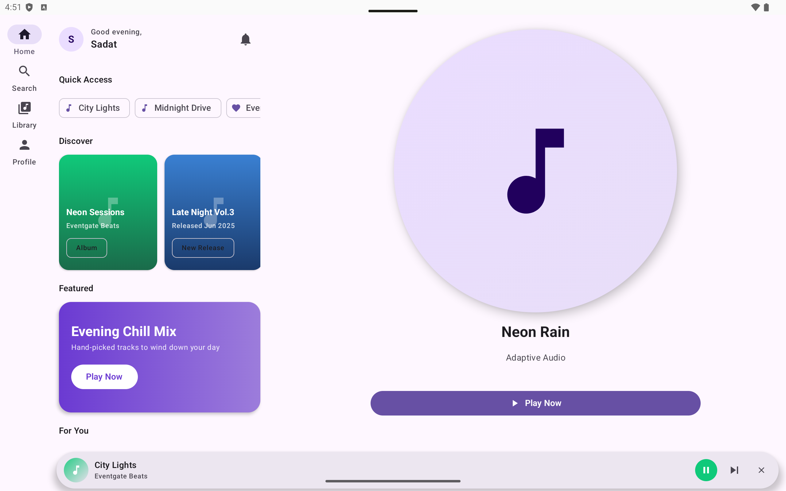
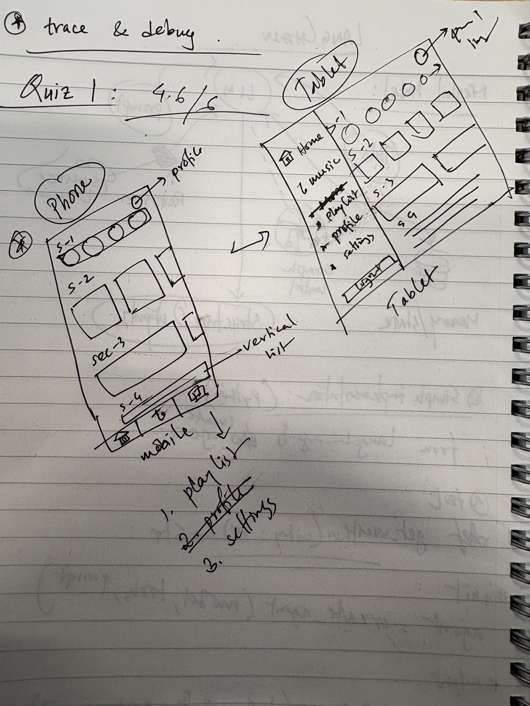
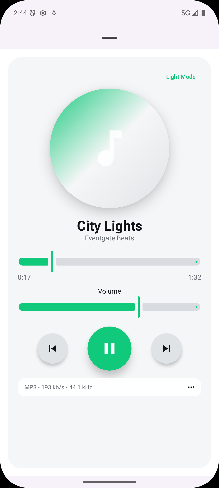
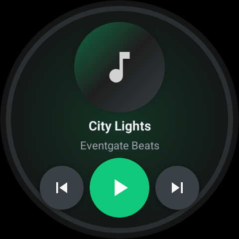
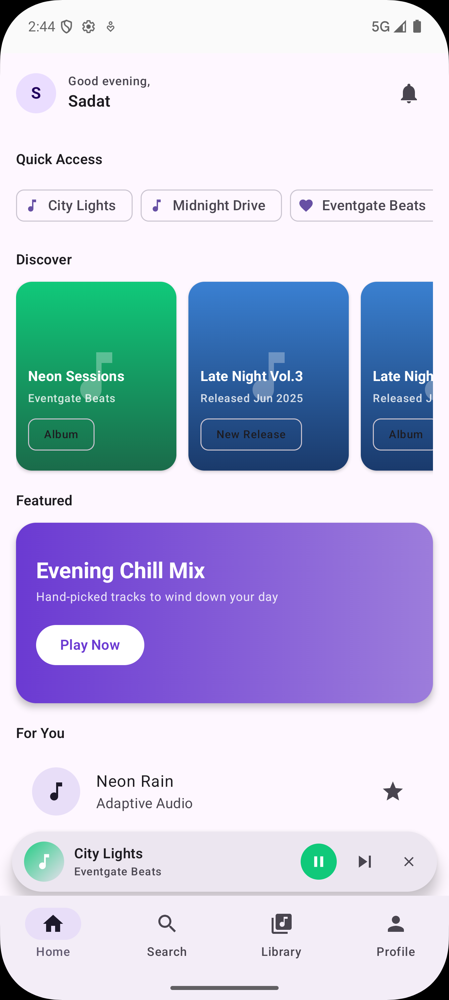

Knowledge Sharing · Android Skills
Build once.
Run everywhere.
Introducing android-adaptive-ui — an AI coding skill that audits, generates,
and fixes Android UI across every screen class.
Phone
Tablet
Foldable
Wear OS
Android TV
Android Auto
Presented by Sadat Sayem · June 2026
The Problem
Android runs on 6 form factors.
Your code was written for 1.
📱
Phone📟
Tablet🔁
Foldable📺
Android TV⌚
Wear OS🚗
Android Auto⚠ HARDCODED LAYOUTSFixed column counts break on large screens. Tablets get a stretched phone UI.
⚠ MISSING NAV PATTERNSBottom nav on a 10" tablet makes no sense. Navigation rail is never added.
⚠ ZERO FORM-FACTOR LOGICWear OS needs a radial layout. Android Auto needs 44dp touch targets. Neither gets them.
What We're Solving
Same content,
smarter layout.

📱 Phone · Player
Single col · Bottom nav

📟 Tablet · Home
Two-pane · Nav Rail
→
Bottom nav on phone → Navigation Rail on tablet
→
Single column → Two-pane layout on wide screen
→
Mini player bottom sheet → Persistent side panel on tablet
→
Full touch UI → Radial controls on Wear OS round canvas
MATERIAL 3 ADAPTIVE
WindowSizeClass · NavigationSuiteScaffold · AdaptiveNavigationSuite · TwoPane
Introducing
android-adaptive-ui
An installable AI skill for Claude Code and Codex that detects adaptive UI issues, generates responsive Compose scaffolds, and fixes violations — all from a single command.
6
Form Factors
13+
Fix Patterns
6
Workflow Engines
0
Manual Rewrites
analyze_ui
analyze_sketch
generate_layout
ux_preview
apply_responsiveness
add_form_factor
fix:* atomic
Under the Hood
System Architecture

User Commands
Session Init
Workflow Engines
Data Stores
Companion Skills
Structured Output
CI / Standalone
Demo · Step 1
Start with a sketch.

Real sketch used
A photo of a notebook sketch is all the skill needs. The vision engine reads your UI intent and generates adaptive Compose code for every target form factor.
# point the skill at your sketch photo
analyze_sketch --img IMG_9304.jpg
# generate for a specific form factor
analyze_sketch --img IMG_9304.jpg \
--target tablet
# use last sketch result for layout gen
generate_layout --from-sketch
Vision engine
UX pattern detection
PRD-aware
Demo · Step 2
One sketch → every screen.
Generated from the same PRD + sketch — no manual per-device rewrites

📱 Phone
Single col · Bottom nav
📟 Tablet
Two-pane · Nav Rail · Hero

⌚ Wear OS
Round canvas · Radial
What It Can Do
A command for every workflow.
analyze_ui --src <path>
Scoped audit of your Compose code. Finds hardcoded dimensions, missing WindowSizeClass logic, wrong nav components.
Audit
analyze_sketch --img <path>
Feed a photo or screenshot. Vision engine detects UI sections, nav patterns, generates adaptive Compose scaffold.
Vision
generate_layout --prd <path>
Generate an adaptive scaffold from a PRD or spec file. Reads personas, sections, responsive rules → ready Kotlin.
Generate
ux_preview [--src <path>]
Localhost feedback page showing your UI across form factors before you build. Interactive browser preview.
Preview
apply_responsiveness
Targeted fix pass. Replaces hardcoded columns, adds WindowSizeClass, swaps BottomNav for NavigationRail.
Fix
add_form_factor <target>
Scaffold TV, Wear OS, Android Auto, or foldable without touching existing code. Atomic, reviewable additions.
Scaffold
Get Started
Install in 60 seconds.
1
Make sure you have Claude Code or Codex installed and running in your project.
2
Copy the install prompt on the right and paste it directly into Claude Code chat. The agent handles everything.
3
Confirm the installed version, then run your first audit:
analyze_ui --src app/src/main4
Optional: Install
superpowers first for parallel execution, brainstorming & systematic debugging companions.
github.com/r-sadat-sayem/android-agent-skills
Install the android-adaptive-ui skill from GitHub.
# 1. Check installed version
Check ~/.claude/skills/android-adaptive-ui/VERSION
If it doesn't exist, report "not installed".
# 2. Fetch latest version from GitHub
Fetch: https://raw.githubusercontent.com/
r-sadat-sayem/android-agent-skills/main/
skills/android-adaptive-ui/VERSION
# 3. Run the installer
curl -fsSL https://raw.githubusercontent.com/
r-sadat-sayem/android-agent-skills/main/
scripts/bootstrap-install.sh \
-o /tmp/aau-install.sh && \
bash /tmp/aau-install.sh \
--repo https://github.com/r-sadat-sayem/
android-agent-skills.git \
--skill android-adaptive-ui \
--target claude && rm -f /tmp/aau-install.sh
# 4. Confirm version
Read ~/.claude/skills/android-adaptive-ui/VERSION
Thanks. Let's build.
Questions, feedback, and PRs are all welcome.
github.com/r-sadat-sayem/android-agent-skills
android-adaptive-ui skill
Sadat Sayem

Q & A